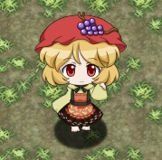

주먹밥변화. 소지 아이템을 이상한 환상향 계열에서는 경단으로, 미라클 파티 계열에서는 와플로 바꾼다. 원작과 마찬가지로 매우 짜증나면서도 잘 이용하면 유용한 적이기도 하다. 항아리째로 마구 바꾸는 원본과는 달리 저랭크일 때는 스키마는 음식으로 바꾸지 않는 양심도 보유하고 있다. 사마 랭크부터는 그런 거 없고 장비품을 제외하면 전부 음식으로 바꿔버리기 때문에 주의하자. 공격력과 체력은 평범한 수준이지만 방어력이 상당히 단단한 편이라 대책은 확실히 준비해두는 쪽이 좋다. 미라클 파티 Plus부터는 아이템 보호 악세서리가 추가되어서 대책을 세울 수 있게 되었다.
출처: 몬스터 위키